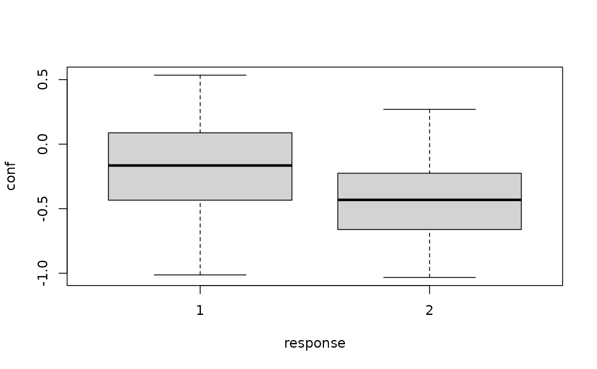
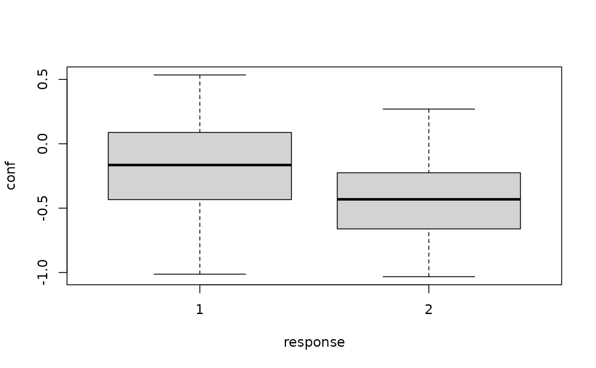

Simulation of confidence ratings and RTs in leaky competing accumulator model
Source:R/rLCA.R
rLCA.RdSimulates the decision responses, reaction times and state of the loosing accumulator together with a confidence measure in the leaky competing accumulator model. Optionally, there is a post-decisional accumulation period, where the processes continues.
Usage
rLCA(n, mu1, mu2, th1, th2, k = 0, beta = 0, SPV = 0, tau = 0,
wx = 1, wrt = 0, wint = 0, t0 = 0, st0 = 0, pi = 0, sig = 1,
time_scaled = TRUE, simult_conf = FALSE, delta = 0.01, maxrt = 15)Arguments
- n
integer. number of samples.
- mu1
mean momentary evidence for alternative 1
- mu2
mean momentary evidence for alternative 2
- th1
decision threshold for alternative 1
- th2
decision threshold for alternative 2
- k
leakage (default: 0)
- beta
inhibition (default: 0)
- SPV
variation in starting points (default: 0)
- tau
fixed post decisional accumulation period (default: 0)
- wx
weight on balance of evidence in confidence measure (default: 1)
- wrt
weight on RT in confidence measure (default: 0)
- wint
weight on interaction of evidence and RT in confidence measure (default: 0)
- t0
minimal non-decision time (default: 0)
- st0
range of uniform distribution of non-decision time (default: 0)
- pi
factor for input dependent noise of infinitesimal variance of processes (default: 0)
- sig
input independent component of infinitesimal variance of processes (default: 1)
- time_scaled
logical. Whether a time_scaled transformation for the confidence measure should be used.
- simult_conf
logical. Whether in the experiment confidence was reported simultaneously with the decision. If that is the case decision and confidence judgment are assumed to have happened subsequent before the response. Therefore
tauis included in the response time. If the decision was reported before the confidence report,simul_confshould beFALSE.- delta
numerical. Size of steps for the discretized simulation (see details).
- maxrt
numerical. Maximum reaction time to be simulated (see details). Default: 15.
Value
Returns a data.frame with three columns and n rows. Column names are rt (response
time), response (1 or 2, indicating which accumulator hit its boundary first), and conf (the
value of the confidence measure; not discretized!).
Details
The simulation is done by simulating discretized steps until one process reaches the boundary with an update rule: $$\delta X_i(t) = \max (0, X_i(t) + \delta_t ((k-1)X_i(t)-\beta X_{j=i} (t) + \mu_i + \varepsilon_i (t)),$$ with \(\varepsilon_i(t) \sim N(0, (\pi \mu_i)^2 + \sigma^2 )\). If no boundary is met within the maximum time, response is set to 0. After the decision, the accumulation continues for a time period (tau), until the final state is used for the computation of confidence.
Examples
# minimal arguments
simus<- rLCA(n=20, mu1=1, mu2=-0.5, th1=1, th2=0.8)
head(simus)
#> rt response xl x1 x2 conf
#> 1 0.34 2 0.6261278 0.6261278 0.8107790 -0.6261278
#> 2 0.44 2 0.1362197 0.1362197 0.8331644 -0.1362197
#> 3 1.09 1 0.1144678 1.0111295 0.1144678 -0.1144678
#> 4 0.14 2 0.3533119 0.3533119 0.8497536 -0.3533119
#> 5 0.64 1 0.0000000 1.0959535 0.0000000 0.0000000
#> 6 0.33 2 0.0000000 0.0000000 0.8460095 0.0000000
# specifying all relevant parameters
simus <- rLCA(n=1000, mu1 = 2.5, mu2=1, th1=1.5, th2=1.6,
k=0.1, beta=0.1, SPV=0.2, tau=0.1,
wx=0.8, wrt=0.2, wint=0, t0=0.2, st0=0.1,
pi=0.2, sig=1)
if (requireNamespace("ggplot2", quietly = TRUE)) {
require(ggplot2)
ggplot(simus, aes(x=rt, y=conf))+
stat_density_2d(aes(fill = after_stat(density)), geom = "raster", contour = FALSE) +
facet_wrap(~response)
}
 boxplot(conf~response, data=simus)

boxplot(conf~response, data=simus)
